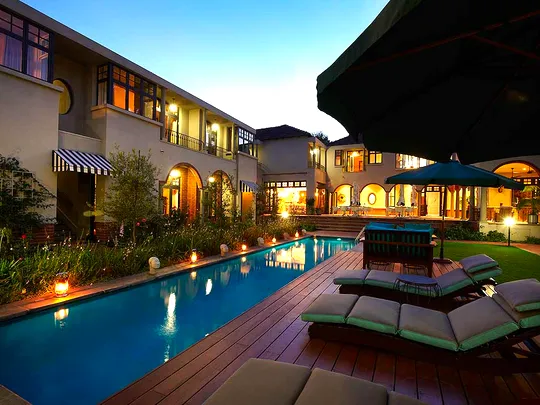
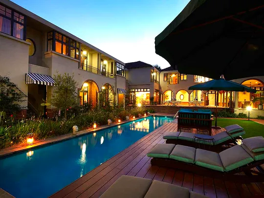
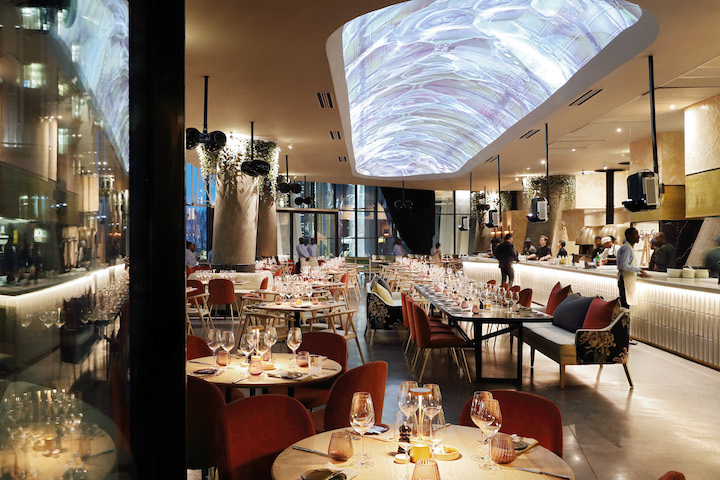
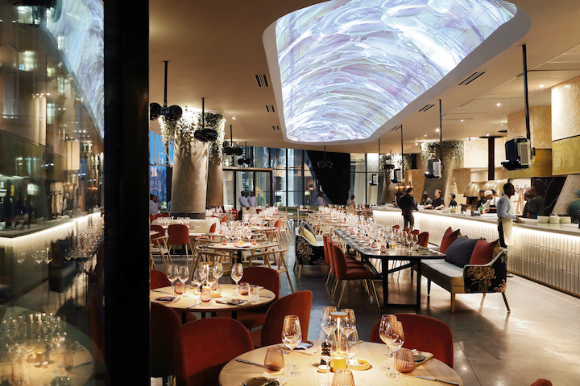

Johannesburg, South Africa's biggest city and capital of Gauteng province, began as a 19th-century gold-mining settlement. Its sprawling Soweto township was once home to Nelson Mandela and Desmond Tutu. Mandela’s former residence is now the Mandela House museum. Other Soweto museums that recount the struggle to end segregation include the somber Apartheid Museum and Constitution Hill, a former prison complex.Johannesburg is, the largest city in South Africa, classified as a megacity and is one of the 50 largest urban areas in the world.It is the provincial capital and largest city of Gauteng, which is the wealthiest province in South Africa.Johannesburg is the seat of the Constitutional Court, the highest court in South Africa.Most of the major South African companies and banks have their head offices in Johannesburg. The city is located in the mineral-rich Witwatersrand range of hills and is the centre of large-scale gold and diamond trade. It was one of the host cities of the official tournament of the 2010 FIFA World Cup.

 

 
